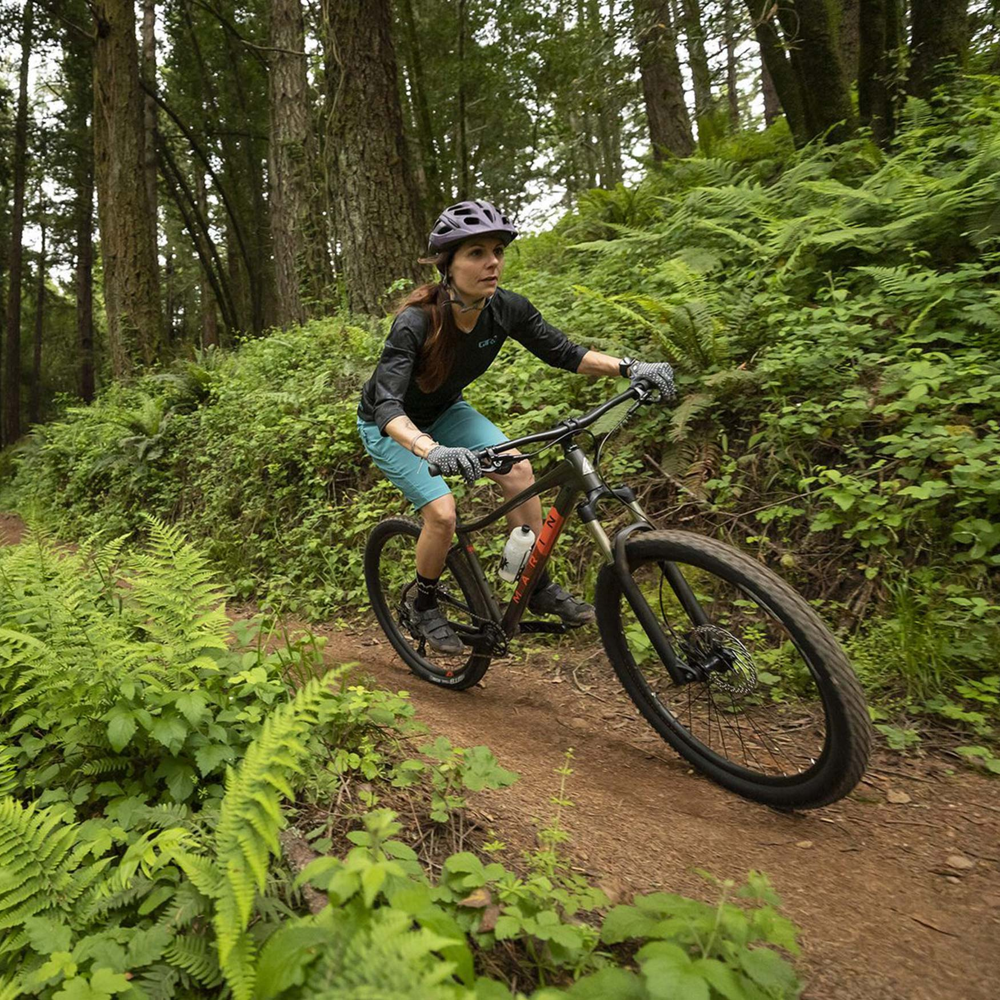

El ciclismo de montaña o MTB, considerado un deporte de riesgo, es un ciclismo de competición realizado en circuitos naturales a través de bosques por caminos angostos con cuestas empinadas.

Es la disciplina más popular y se compite en circuitos de terreno mixto que combinan subidas y bajadas. Requiere resistencia y habilidad técnica.
Enfocada en descender rápidamente por terrenos muy empinados y técnicos. Se necesita una bicicleta robusta y habilidades avanzadas de manejo.
Combina elementos de cross-country y downhill. Incluye tramos cronometrados (bajadas técnicas) y enlaces (subidas no cronometradas).
Similar al cross-country pero con un enfoque más recreativo. Los recorridos son menos técnicos y más accesibles, ideales para disfrutar de la naturaleza.
Se centra en la creatividad y las acrobacias, como saltos y trucos. Se practica en parques de bicicletas y terrenos con obstáculos diseñados.
Consiste en realizar saltos y trucos en rampas de tierra. Las bicicletas son más pequeñas y resistentes.